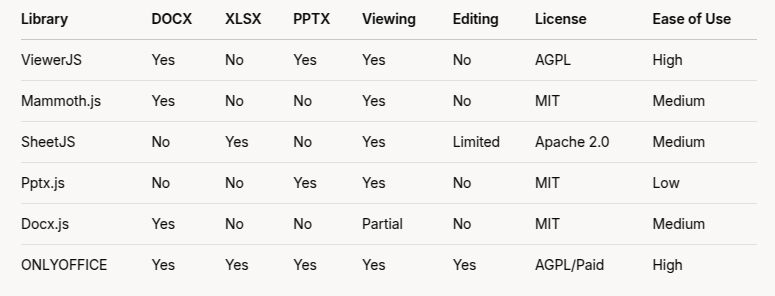
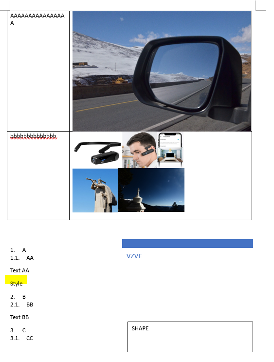
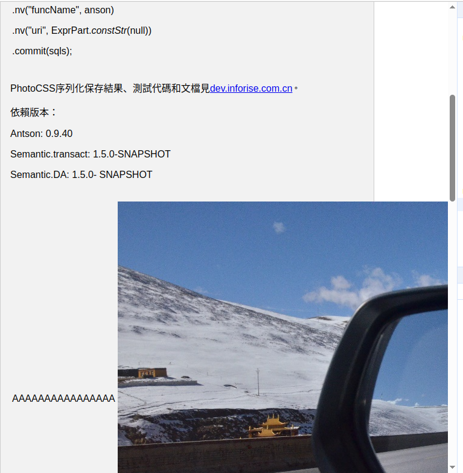
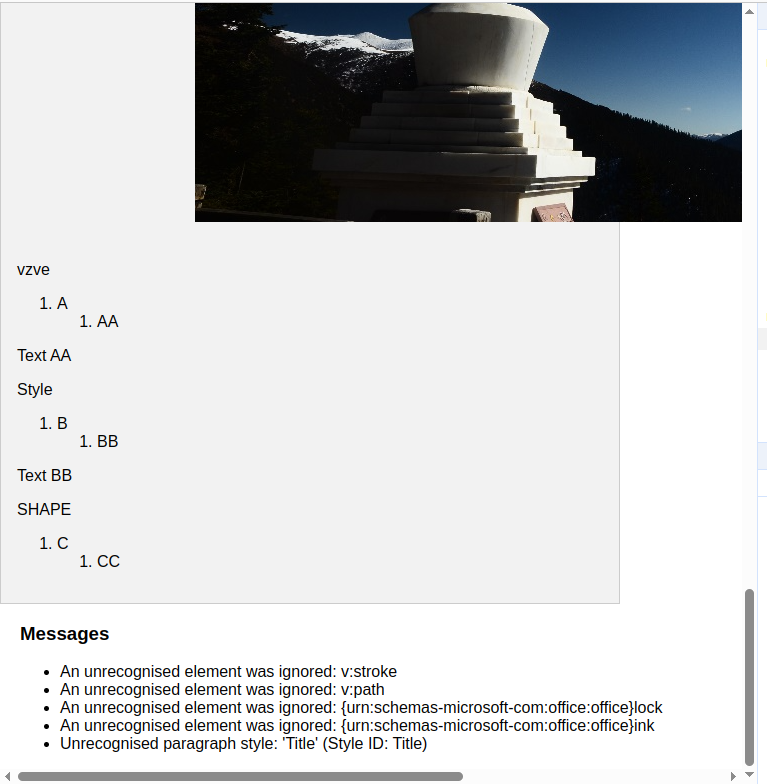
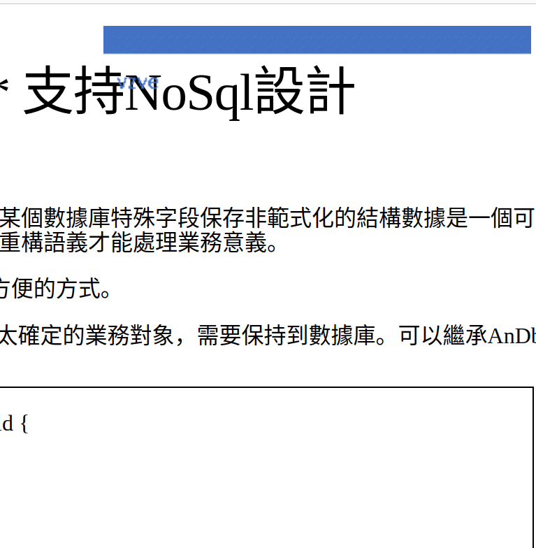
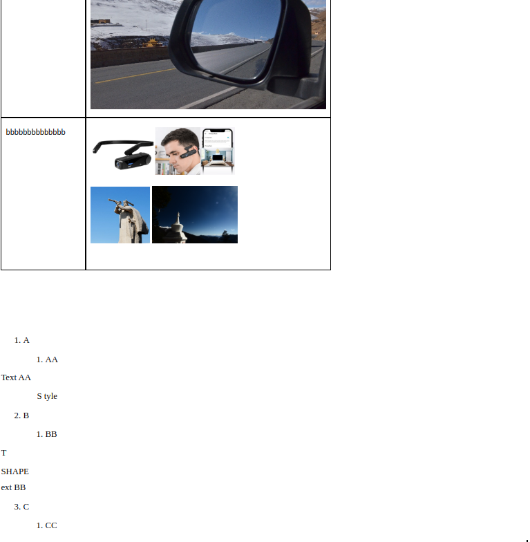

A Survey on HTML Office / PDF Viewers
The known answers
Google & Microsoft provide online API for viewing office document.
Grok:
Microsoft 365 Business Standard (~$12.50 USD/user/month, annual commitment):
Includes: Everything in Business Basic plus desktop versions of Office apps.
Viewing/Editing: Same web capabilities as Business Basic.
Best for: If your users need both web and desktop access, though your focus seems to be web-based viewing.
Comparison and Recommendation
Recommendation for Your Use Case
If you need a simple, free solution for all Office formats: Use ViewerJS for basic viewing of DOCX and PPTX, paired with SheetJS for XLSX. This avoids Microsoft 365 licensing entirely but sacrifices advanced formatting fidelity.
If you prioritize DOCX only: Mammoth.js is lightweight and easy to integrate for Word documents.
If you need Excel support: SheetJS is your best bet for spreadsheets.
If you want a full-featured, self-hosted option: Set up ONLYOFFICE Document Server with its JS SDK for a comprehensive viewer (and editor) without Microsoft dependency.
If Microsoft 365 is still an option: Integrate with Office for the web using the Microsoft Graph API (as discussed earlier), which provides the most accurate rendering but requires user licenses.
Exmaple: syntler/react-doc-viewer
Quote:
This library uses the official MS Office online document viewing service. This means it works on an iframe basis and only supports public file URLs! Therefore, it may not be compatible with all projects. Currently, there is no way to natively render MS Office documents in the browser.
Source at the forked project can be an example of Office 365 API usage.
const MSDocRenderer: DocRenderer = ({ mainState: { currentDocument } }) => { if (!currentDocument) return null; return ( <Container id="msdoc-renderer"> <IFrame id="msdoc-iframe" title="msdoc-iframe" src={`https://view.officeapps.live.com/op/embed.aspx?src=${encodeURIComponent( currentDocument.uri )}`} frameBorder="0" /> </Container> ); };
OnlyOffice
Best for converting docx except Googel & Office 365, can be deploved with docker:
sudo docker run -i -t -d -p 80:80 --restart=always -e JWT_SECRET=my_jwt_secret onlyoffice/documentserver
Performance:
20 - 80 MiB download for a simple docx file.
import jwt from 'jsonwebtoken';
/**
export const only_payload = {
"document": {
"fileType": "doc",
"key": "unique-key-" + new Date().getTime(), // Unique key for each session
"title": "Sample Document",
// "url": "http://ieee802.org:80/secmail/docIZSEwEqHFr.doc"
"url": "doc-res.docx"
},
"documentType": "word", // Can be "word", "cell" (spreadsheet), or "slide" (presentation)
"editorConfig": {
"mode": "view", // "view" for read-only, "edit" for editing
// "callbackUrl": "http://localhost:3000/save" // Where changes are sent (optional)
},
"height": "100%",
"width": "100%",
};
*/
import { config_docx } from './doc-res-config.mjs';
const secret = 'mysecretkey'; // Replace with your ONLYOFFICE or custom secret
const onlyoffice_token = jwt.sign(config_docx, secret, { algorithm: 'HS256' });
In viewer.tsx:
import {config_docx as config} from './ext/doc-res-config.mjs';
loadOnlyOffice(token: string) {
let conf = structuredClone(config);
conf.document.key = this.props.dockey
conf.token = token;
if (!this.DocsAPI)
this.DocsAPI = new (window as any).DocsAPI.DocEditor(this.docdiv, conf);
}
The Word document is acctually converted into html at OnlyOffice Docment Server.
Mammoth.js
Open source at Github.
To build demo:
make setup
The target:
{kind=link}
And results:
 {kind=link}
{kind=link}
{kind=link}
Pro:
Pure client js even load as the local file protocol.
A Hack into JODConverter
Build:
gradlew clean build -x test
Not Perfect Conversion
Size of build/distributions/jodconverter-4.4.8.zip: 8 MiB
 {kind=link}
{kind=link}
Import Gradle Project In Eclipse
./gradlew eclepse File -> import…
Then update gradle project from context menu.
Project Structure
.
├── build.gradle
├── gradle
│ ├── java-config.gradle
│ ├── publish-config.gradle
│ └── wrapper
├── jodconverter-cli
│ ├── build.gradle
│ ├── conf
│ └── src
├── jodconverter-core
│ ├── build.gradle
│ └── src
├── jodconverter-local
│ ├── build.gradle
│ └── src
├── jodconverter-local-lo
│ ├── build.gradle
│ └── src
├── jodconverter-local-oo
│ ├── build.gradle
│ └── src
├── jodconverter-remote
│ ├── build.gradle
│ └── src
├── jodconverter-spring
│ ├── build.gradle
│ └── src
├── jodconverter-spring-boot-starter
│ ├── build.gradle
│ └── src
├── ...
└── LICENSE
In jodconvert-cli:
CliConverter.convert() -> convertFile() {
convert(inputFile, outputFile);
}
The jodconverter/jodconverter-local/integTest/…/DrawITest.java Should be an example of the process.
class DrawITest {
@Test
void withDrawDocument_ShouldSucceed(final @TempDir File testFolder, final OfficeManager manager) {
final Filter filter =
(context, document, chain) -> {
assertThat(Draw.isDraw(document)).isTrue();
assertThat(Draw.isImpress(document)).isFalse();
};
final File sourceFile = documentFile("test.odg");
final File outputFile = new File(testFolder, "out.pdf");
assertThatCode(
() ->
LocalConverter.builder()
.officeManager(manager)
.filterChain(filter)
.build()
.convert(sourceFile)
.to(outputFile)
.execute())
.doesNotThrowAnyException();
}
where Filter “represents a step where a document is transformed.”
public interface Filter {
void doFilter(
@NonNull OfficeContext context, @NonNull XComponent document, @NonNull FilterChain chain)
throws Exception;
}
The XComponent represents document elements as UNO Objects for representing data across OpenOffice & LibreOffice.